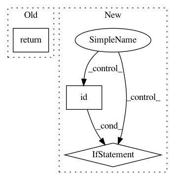

e8e8f7625be33b009e81ec6457526382ef00d929,keras/layers/core.py,Layer,get_input,#Layer#Any#,115
Before Change
def get_input(self, train=False):
if hasattr(self, "previous"):
return self.previous.get_output(train=train)
elif hasattr(self, "input"):
return self.input
else:
raise Exception("Layer is not connected" +
After Change
// to avoid redundant computations,
// layer outputs are cached when possible.
if hasattr(self, "layer_cache"):
previous_layer_id = id(self.previous)
if previous_layer_id in self.layer_cache:
return self.layer_cache[previous_layer_id]
previous_output = self.previous.get_output(train=train)
if hasattr(self, "layer_cache"):
previous_layer_id = id(self.previous)
self.layer_cache[previous_layer_id] = previous_output
In pattern: SUPERPATTERN
Frequency: 3
Non-data size: 3
Instances
Project Name: keras-team/keras
Commit Name: e8e8f7625be33b009e81ec6457526382ef00d929
Time: 2015-12-10
Author: francois.chollet@gmail.com
File Name: keras/layers/core.py
Class Name: Layer
Method Name: get_input
Project Name: keras-team/keras
Commit Name: 6429a57a3cc1e13c5a5e09af57e85bf6cf8c637b
Time: 2016-02-11
Author: Nicholas.Eggert@target.com
File Name: keras/layers/core.py
Class Name: Layer
Method Name: input_shape
Project Name: microsoft/nni
Commit Name: 192a807b39bc029c273c2d1349fb73850ed9484c
Time: 2020-12-13
Author: Quanlu.Zhang@microsoft.com
File Name: nni/retiarii/converter/graph_gen.py
Class Name:
Method Name: convert_module